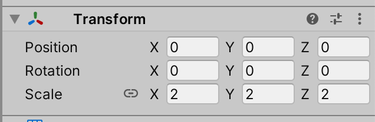
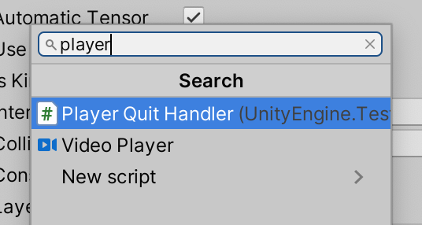
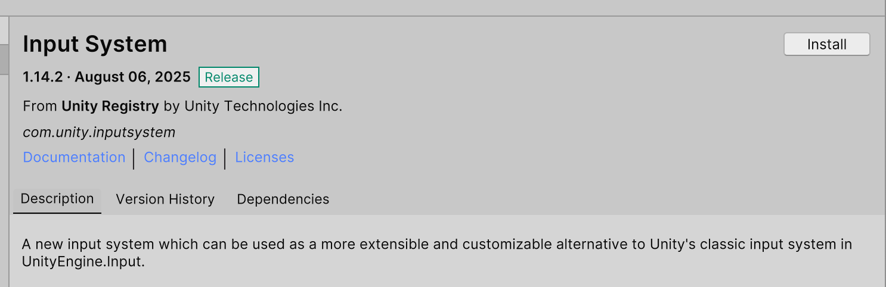
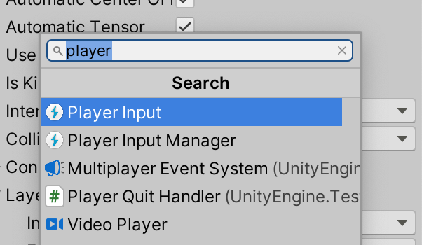
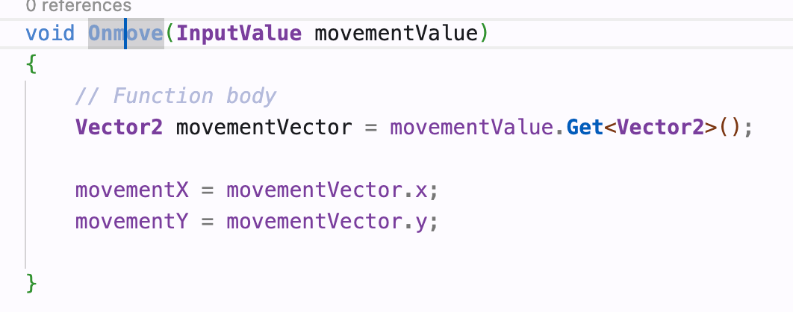
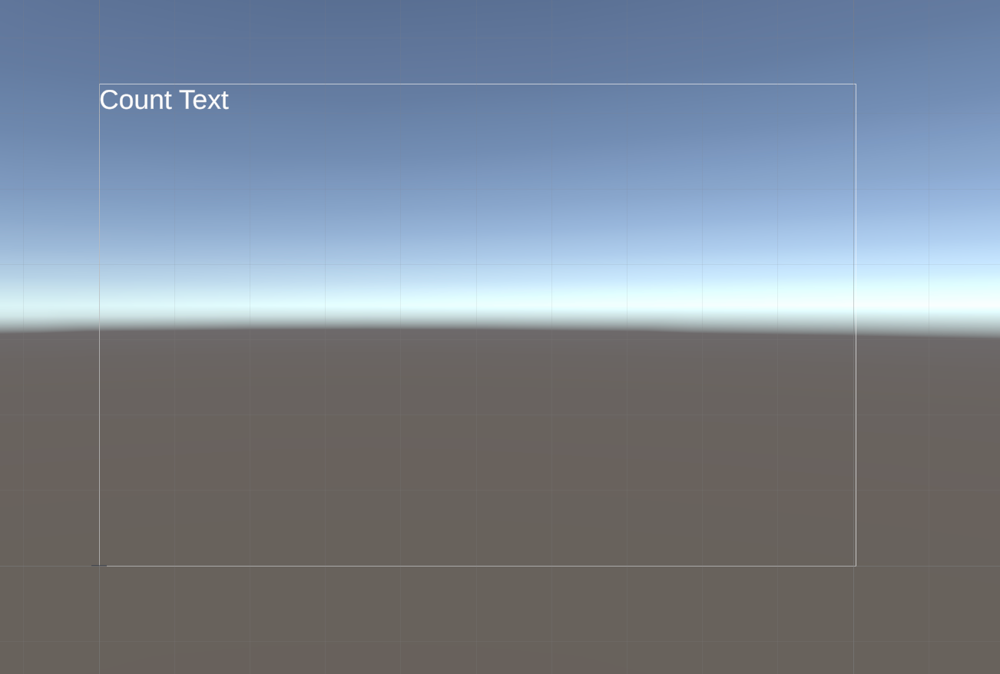
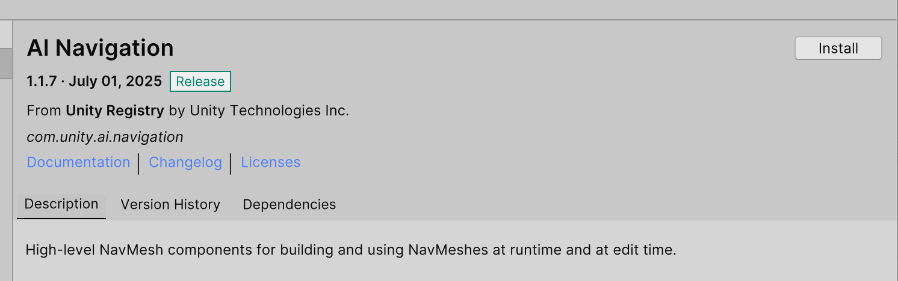
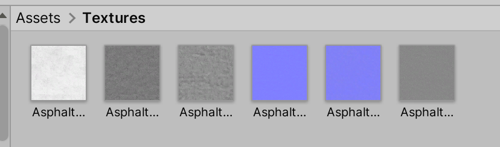
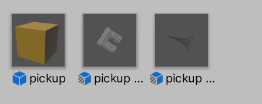
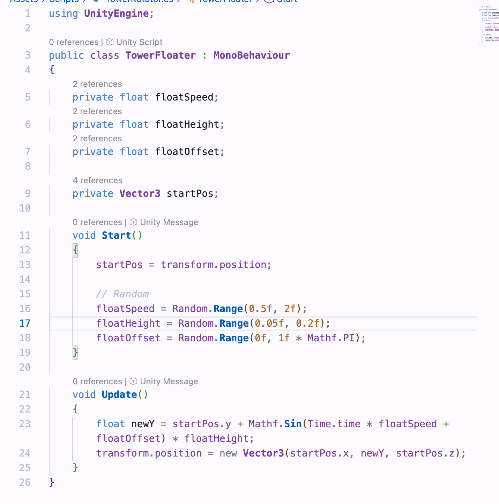

Author: Zeyu Liang

Way 1: Use the “R” key to switch to the Scale tool, then drag the handles to change the scale.
Way 2: Change the scale values directly in the Transform component.



Problem: I can’t find the player input in unity
Solution: install the input system
 Problem: The ball couldn’t move
Solution: I write the wrong function



Question: Are there some tools like an Array Modifier in blender to make this step easier?

Problem: I can’t change the position of the text.
Solution: I used the wrong key. (shift+option)
Problem: can’t find it. After installing the package, all good!



I’m not 100% sure if I fully understood what “IP Paris flavor” is supposed to mean, but I tried to add some Paris-themed elements into my game anyway.

I downloaded a street texture from ambientCG and applied it to the ground to make it feel more like a modern Paris sidewalk.
Instead of just using basic shapes, I used Eiffel Tower and Arc de Triomphe models as the pickups, so it feels like you’re collecting famous spots in Paris.
Problem: I downloaded a .glb model from Sketchfab, but Unity couldn’t open it properly (nothing showed up).
Solution: I imported the .glb file into Blender, then exported it as .fbx, and that worked fine in Unity
Problem: Since I was using prefabs, once I changed the mesh, it applied to all pickups — but I only wanted to modify some of them.
Solution: I created something called a “prefab variant” which let me make small changes (like changing the model) while keeping the same logic.
The old rotation script didn’t really work with the new models, so I replaced it with a simple floating animation.
Now the landmarks float up and down slowly, making them feel a bit more alive!
